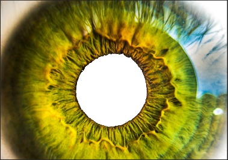

STAGE 1
I started off with a photo of myself
STAGE 2
I outlined my face, hair and clothes and filled in my eyes, eyebrows, nostrils, mouth, and chin using the brush tool. I duplicated the outline layer and filled my face and ears, using the paint bucket tool to fill them. I then did the same for my clothes and the wall behind me.
STAGE 3

I filled in my hair with two different colours, using the brush tool to separate the hair by drawing lines of the two colours then filling each side in with the paint bucket tool. I then used the mixer brush to blend the colours together.
STAGE 4
I then moved every layer down with the move tool and used the brush tool to create the top of my head and then used the lasso tool to select a part of the hair that is already blended before duplicating it and moving it into the unoccupied space for the hair. I then used the mixer brush tool again to blend the original hair and new hair together.
FINISHED PRODUCT
Now, how about my Beth Hoeckel images.

I started out with the five images above (Although these are not the base images and have already been photshopped, I couldn't find the originals)
I inserted the eye photo and cut out the iris in the centre.
Tools: Lasso tool, CTRL V and delete
Then, I put the photo of a nebula behind it
Tools: CTRL V
Next, I inserted the astronaut and dog and cut out the background behind them and cut out the astronaut’s visor which I replaced with black ‘pen’
Tools: Lasso, magic wand, delete, brush tool
Then, cut an image of a space shuttle to the shape of the visor and put it in
Lasso, delete
Finally, I drew a gold layer over the visor and a black layer over the dog, after using the quick selection tool to make sure I didn’t go over the outline. I then lowered the opacity of the visor, black layer and gold layer to make the dogs’ light source look the same as the astronaut’s, as well as giving the visor a realistic tint and reflection.
Quick selection tool, brush, opacity
Out popped the finished product.